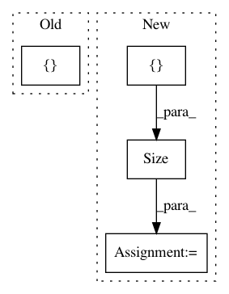

addf94ed7dd37459b8b72964713f28328ae699b1,tests/test_distributions.py,DistributionsTestCase,test_dist_normal_batched_2,#DistributionsTestCase#,193
Before Change
dist_batch_shape_correct = torch.Size([2, 3])
dist_event_shape_correct = torch.Size()
dist_sample_shape_correct = torch.Size([2, 3])
dist_means_correct = [[0, 2, 0], [2, 0, 2]]
dist_stddevs_correct = [[1, 3, 1], [3, 1, 3]]
dist_log_probs_correct = [[-0.918939, -2.01755, -0.918939], [-2.01755, -0.918939, -2.01755]]
After Change
dist_batch_shape_correct = torch.Size([2])
dist_event_shape_correct = torch.Size()
dist_sample_shape_correct = torch.Size([2])
dist_log_prob_shape_correct = torch.Size([2])
dist_means_correct = [0, 2]
dist_stddevs_correct = [1, 3]
dist_log_probs_correct = [-0.918939, -2.01755]
In pattern: SUPERPATTERN
Frequency: 3
Non-data size: 4
Instances
Project Name: pyprob/pyprob
Commit Name: addf94ed7dd37459b8b72964713f28328ae699b1
Time: 2018-09-19
Author: atilimgunes.baydin@gmail.com
File Name: tests/test_distributions.py
Class Name: DistributionsTestCase
Method Name: test_dist_normal_batched_2
Project Name: uber/pyro
Commit Name: 2a8c7d1976fc74ff9f1075af31f4b9d0482bee53
Time: 2020-05-15
Author: fehiepsi@gmail.com
File Name: tests/ops/test_welford.py
Class Name:
Method Name: test_welford_dense
Project Name: rusty1s/pytorch_geometric
Commit Name: d8a075668b6e9cdf4c08f6c7285e5c7d2fbf5332
Time: 2017-10-17
Author: matthias.fey@tu-dortmund.de
File Name: torch_geometric/graph/geometry.py
Class Name:
Method Name: edges_from_faces